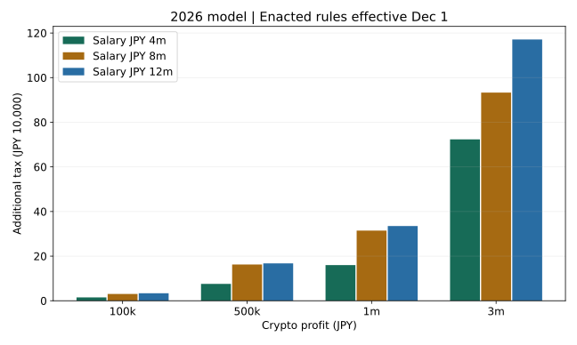

一次資料の計算例に不整合を検出したため、本稿は未公開です。マージ・公開は行いません。試算の独立検算と、一次資料の整合性判定は別です。制度の適用日監査も公開前に完了させる必要があります。
暗号資産の税金はいくら？
ビットコインの利益・確定申告・株式との違いを徹底解説【2026年版】
下書き作成・更新：（UTC）／本番公開日：未定
著者・編集：トピック基地 ｜ 調査日：2026年11月6日（UTC）
暗号資産の税金は、利益に一律の税率を掛ければ必ず求まるわけではありません。給与などの他の所得、所得区分、控除、申告の条件によって結果が変わります。さらに、暗号資産を円に戻していなくても、交換や買い物で所得が認識されることがあります。
- 利益と売却代金は別です。取得費や必要経費を整理したうえで所得を計算します。
- 個人の取引は国税庁FAQでは原則雑所得ですが、事業所得等に該当する場合もあります。
- 分離課税の改正は「大綱に書かれた」「法律が成立した」「適用が始まった」を区別します。成立だけで今年の取引に20%を適用できるとはいえません。
- 会社員の20万円基準は所得税の申告不要制度の一部であり、非課税枠や住民税の共通免除ではありません。
本稿は一般的な解説の下書きです。個別の所得区分・申告義務・取得価額は、事実関係を整理して税務署や税理士へ確認してください。架空の税理士監修は付けていません。編集・訂正方針もご覧ください。
1. 2026年11月調査：制度の段階を分ける
| 区分 | 確認した資料 | 記事での扱い |
|---|---|---|
| A：適用済みのルール | 国税庁FAQ：2025年12月1日の法令等、同月26日公表。タックスアンサー1524等：2026年4月1日法令等 | 改正前の原則雑所得・総合課税、2025年分の試算を区別して説明。調査日までの施行状況の最終監査は公開前の条件 |
| B：成立・公布済み、施行/適用前の部分 | 2026年3月31日公布の所得税法等改正（法律12号）、金融庁が2026年7月15日成立とする金商法等改正 | 特定暗号資産の分離課税等は条件付きの適用開始。基礎控除等は12月1日施行で2026年分に適用。現在適用中と混同しない |
| C：方針・大綱・検討 | 2025年12月26日の税制改正大綱など | 当時の方針資料。後に成立した内容はBの法令資料へ追跡し、大綱だけで現在の適用を判断しない |
国税庁の2026年改正資料は、特定暗号資産の分離課税・損失繰越について成立した改正を説明しています。一方、適用開始は関連する金融商品取引法等改正の施行に連動します。「検討中の話だけ」と扱うのも、「成立したから今年から20%」と扱うのも不適切です。［1］［2］［3］
本下書きでは、一次資料の計算例の不整合により公開を停止しています。また、暗号資産規制改正の具体的な施行日と税制の適用暦日の最終照合は未完了です。「2027年から確定」「全暗号資産が20%」という結論は掲載しません。
2. 利益が出たときの所得区分と税率
一律に雑所得と決めつけない
国税庁FAQの2−2は、暗号資産取引による利益を原則として雑所得（その他雑所得）としています。ただし、年の取引に係る収入金額が300万円を超える場合には、帳簿書類の保存の有無に応じて、原則事業所得、または業務に係る雑所得という取扱いを示しています。収入金額は利益のことではありません。［4：2−2］
帳簿があっても営利性が認められない場合などは個別判断です。また、事業用資産として保有して事業の決済に用いるなど、事業に付随する取引は別の扱いになります。「利益300万円を超えたら自動で事業」「会社員なら絶対に雑所得」という線引きはできません。
総合課税は、全利益に最高税率を掛ける仕組みではない
総合課税の所得は他の総合課税所得と合わせ、所得控除を差し引き、所得税の累進税率を適用します。所得税本体は5〜45%の7段階で、課税所得のすべてに最上位税率を掛けるわけではありません。2025・2026年分の復興特別所得税は、原則として基準所得税額の2.1%です。［5］［6］
| 税 | 主な特徴 | 注意 |
|---|---|---|
| 所得税 | その年の所得を基に累進税率と控除で計算 | 申告不要制度と所得が非課税であることは別 |
| 復興特別所得税 | 2025・2026年分は原則として基準所得税額×2.1% | 利益に2.1%を直接掛けない |
| 住民税 | 通常は前年所得を基に翌年度課税。所得割は標準計10% | 控除、均等割、超過課税等は別。所得税の20万円基準をそのまま使えない |
所得税の最高45%と住民税の標準10%を単純に足した55%は、全員に適用する税率ではありません。復興特別所得税も別に関係します。さらに、国税庁は2027年以後の復興税率変更・防衛特別所得税も案内しているため、将来年の負担を「いつでも同じ」とは説明しません。［5］
3. 課税対象となる取引・保有だけの場合
| 取引 | 整理の基本 | 記録 |
|---|---|---|
| 円に売却 | 売却価額から対応する原価・必要経費等を引いて所得を計算 | 売却日時・数量・円価額・手数料 |
| BTCからETH等へ交換 | 円に戻していなくても、渡した暗号資産の譲渡による損益が生じ得る | 両銘柄の数量・交換時の円換算時価 |
| 暗号資産で買い物 | 使った暗号資産の譲渡損益を、商品の価額と対応原価等から計算 | 購入品の円価額・決済数量 |
| 購入して保有のみ | 個人の通常の保有で、値上がりしただけなら原則として未実現の値上がり益に所得税は生じない | 将来の取得原価計算のため購入履歴は必要 |
| 自分のウォレット間の移動 | 移動を売却・報酬と混同しない。手数料として支払った暗号資産や付随取引は別に確認 | 送受信アドレス・同一所有・手数料 |
例えば取得原価30万円に対応するBTCを、円価額50万円のETHへ交換した場合、手数料を無視した説明用の差額は20万円です。現金が増えていなくても損益を認識し得る点が、最も間違えやすい部分です。受け取ったETHの取得価額も記録し、後の売却時に同じ価値を二重計上しないようにします。［4：1−1〜1−5］
海外取引所やDEXを使えば日本の申告義務が消えるわけではありません。ここでは日本居住の個人を想定し、法人の期末時価評価や非居住者の取扱いとは分けています。
4. マイニング・ステーキング・エアドロップ
国税庁FAQ1−7は、マイニング・ステーキング・レンディング等で取得した暗号資産について、取得時の時価を総収入金額とし、取得に要した費用を必要経費とする考え方を示しています。その後に売却する場合は、取得時に収入計上した価額が取得価額になる点も重要です。［4：1−7］
受取数量、受取日時、円換算時価、根拠とした価格、関連費用を残しましょう。報酬を自動で再投資した場合にも、円に出金していないことだけで課税がないとは判断できません。
エアドロップは一律の結論を置かない：取得の原因や条件がさまざまで、本調査では名称だけで一律に課税時点・所得区分を断定できる公式根拠を確認できていません。取引条件・対価性・取得時の価値などを整理し、個別に税務署等へ確認する項目として残します。
また、ハードフォークはFAQ1−6で、取得時に取引相場がなく価値を有しないケースについて、取得時の所得なし・取得価額0円という取扱いが示されています。これを、すべての無料配布やエアドロップに一般化してはいけません。［4：1−6］
5. 取得価額・総平均法・移動平均法
購入した暗号資産の取得価額には、購入代価と購入のために要した手数料等を含めます。売却時手数料などの必要経費とは整理を分け、同じ手数料を二重に控除しないようにします。価格の分からない取引があっても、都合のよい価格を推測で入力しないでください。［4：1−5、2−3］
| 方法 | 基本 | 留意点 |
|---|---|---|
| 総平均法 | 年初保有分と年中取得分の価額・数量から年の平均単価を計算 | 後の購入も年の平均に影響する。年間履歴をそろえる |
| 移動平均法 | 取得のたびに保有数量と価額を更新して平均単価を再計算 | 取引順序と保有残高の連続した管理が必要 |
銘柄ごとに評価方法を選定し、所定の届出を行います。届出がない場合の法定評価方法は総平均法です。届出や変更承認の期限・要件があるため、毎年有利な方を自由に選び直せると考えないでください。国内外の口座やウォレットを銘柄単位で集約することも必要です。［4：2−4〜2−9］
年間取引報告書は有用ですが、取引所外へ移した資産や他社取引がすべて含まれているとは限りません。履歴不足で平均単価が崩れると、売却代金が正しくても所得計算が誤る場合があります。
6. 会社員の確定申告：20万円だけでは判断しない
給与を1か所から受け、すべて源泉徴収の対象である人については、給与・退職以外の所得合計が20万円を超えると申告が必要となるのが国税庁の示す基本的なケースです。給与収入2,000万円超、複数給与、その他の申告理由なども確認します。20万円は売却代金ではなく所得で、暗号資産以外の対象所得も合計します。［7］
- ① 給与や他の所得・申告理由を整理
給与2,000万円超、複数給与、年末調整の状況、他の所得、還付申告等を確認。典型条件から外れる場合は個別判定へ。 - ↓ ② 原価・経費を集計して所得を計算
暗号資産単独の売却額ではなく、対象となる他の所得を含めて整理する。 - ↓ ③ 所得税の申告不要制度に該当するか確認
20万円以下でも、他の理由で確定申告する場合はその所得を含める必要がある。図だけで申告不要と断定しない。 - ↓ ④ 住民税を別に確認
所得税の確定申告をしない場合、住民税の申告が必要となる場合がある。居住自治体へ確認。 - ↓ ⑤ 申告・納付・記録保存
対象年と制度、所得区分、計算方法を確認して作成。迷うケースは税務署・税理士へ。
医療費控除等で確定申告する場合には、所得税の申告不要制度の対象になり得る少額所得も含めて申告します。所得税の申告を行えば一般に住民税の申告を別途行う必要はありませんが、申告しない場合は自治体の案内を確認してください。［8］
7. 利益10万・50万・100万・300万円のモデル税額
以下は暗号資産の所得を全額含めて確定申告する会社員モデルです。申告義務の判定結果ではなく、税額の計算条件を示す試算です。特に10万円の行も所得税申告へ含める条件であり、申告不要制度に該当した人の実際の納付額と同じとは限りません。
| 給与年収 | 給与所得 | 年の社会保険料控除 |
|---|---|---|
| 400万円 | 276万円 | 60万円 |
| 800万円 | 610万円 | 120万円 |
| 1,200万円 | 1,005万円 | 180万円 |
- 日本居住の単身会社員、扶養・配偶者・障害等の人的控除なし。他の所得、医療費・生命保険・寄附金・住宅ローン等の控除なし。
- 社会保険料は実在の保険料を推定した値ではなく固定の仮定。勤務先の健康保険・厚生年金に加入し、暗号資産による国保等の増加は計算しない。
- 利益は取得原価・必要経費計算後の所得。事実関係として事業所得に該当しない雑所得を仮定するが、金額だけで所得区分を決定しない。
- 所得税の基礎控除は給与所得と暗号所得を合わせた合計所得で再判定。利益増加で控除額が下がるケースも含める。
- 住民税は標準税率の市区6%・都道府県4%、基礎控除43万円、基礎控除に係る調整控除計2,500円。超過課税なし。モデルでは非課税基準を超え、均等割・森林環境税は利益の有無で同じなので増分から相殺。
- 給与だけの年税額を年末調整済みの源泉徴収額と仮定。表は暗号所得なしとの差であり、年間税額全部ではない。
B：成立済み・12月施行後の2026年分通常申告
| 利益 | 所得税本体の増分 | 復興税の増分 | 国税納付増分（端数処理後） | 住民税所得割の増分 | 合計増分 |
|---|---|---|---|---|---|
| 100,000 | 5,000 | 105 | 5,100 | 10,000 | 15,100 |
| 500,000 | 25,000 | 525 | 25,600 | 50,000 | 75,600 |
| 1,000,000 | 58,500 | 1,228 | 59,800 | 100,000 | 159,800 |
| 3,000,000 | 414,500 | 8,704 | 423,200 | 300,000 | 723,200 |
| 利益 | 所得税本体の増分 | 復興税の増分 | 国税納付増分（端数処理後） | 住民税所得割の増分 | 合計増分 |
|---|---|---|---|---|---|
| 100,000 | 20,000 | 420 | 20,500 | 10,000 | 30,500 |
| 500,000 | 110,000 | 2,310 | 112,300 | 50,000 | 162,300 |
| 1,000,000 | 210,000 | 4,410 | 214,400 | 100,000 | 314,400 |
| 3,000,000 | 619,900 | 13,018 | 633,000 | 300,000 | 933,000 |
| 利益 | 所得税本体の増分 | 復興税の増分 | 国税納付増分（端数処理後） | 住民税所得割の増分 | 合計増分 |
|---|---|---|---|---|---|
| 100,000 | 23,000 | 483 | 23,500 | 10,000 | 33,500 |
| 500,000 | 115,000 | 2,415 | 117,500 | 50,000 | 167,500 |
| 1,000,000 | 230,000 | 4,830 | 234,900 | 100,000 | 334,900 |
| 3,000,000 | 853,000 | 17,913 | 871,000 | 300,000 | 1,171,000 |
A：適用済み2025年分の参考比較
| 利益 | 所得税本体の増分 | 復興税の増分 | 国税納付増分（端数処理後） | 住民税所得割の増分 | 合計増分 |
|---|---|---|---|---|---|
| 100,000 | 5,000 | 105 | 5,100 | 10,000 | 15,100 |
| 500,000 | 25,000 | 525 | 25,500 | 50,000 | 75,500 |
| 1,000,000 | 86,500 | 1,816 | 88,300 | 100,000 | 188,300 |
| 3,000,000 | 414,500 | 8,704 | 423,200 | 300,000 | 723,200 |
| 利益 | 所得税本体の増分 | 復興税の増分 | 国税納付増分（端数処理後） | 住民税所得割の増分 | 合計増分 |
|---|---|---|---|---|---|
| 100,000 | 20,000 | 420 | 20,400 | 10,000 | 30,400 |
| 500,000 | 110,000 | 2,310 | 112,300 | 50,000 | 162,300 |
| 1,000,000 | 210,000 | 4,410 | 214,400 | 100,000 | 314,400 |
| 3,000,000 | 621,100 | 13,043 | 634,100 | 300,000 | 934,100 |
| 利益 | 所得税本体の増分 | 復興税の増分 | 国税納付増分（端数処理後） | 住民税所得割の増分 | 合計増分 |
|---|---|---|---|---|---|
| 100,000 | 23,000 | 483 | 23,500 | 10,000 | 33,500 |
| 500,000 | 115,000 | 2,415 | 117,500 | 50,000 | 167,500 |
| 1,000,000 | 230,000 | 4,830 | 234,900 | 100,000 | 334,900 |
| 3,000,000 | 857,000 | 17,997 | 875,000 | 300,000 | 1,175,000 |

計算方法・端数処理
所得税の課税所得は1,000円未満を切り捨て、速算表で本体税額を求めます。復興特別所得税は本体額の2.1%を計算して1円未満切捨て。給与だけの場合と暗号所得を含む場合をそれぞれ計算し、源泉徴収額を差し引いた国税納付段階の100円未満切捨ても反映します。したがって、所得税本体増分と復興税増分の単純合計が、国税納付増分と一致しない行があります。
住民税の所得割は課税標準の1,000円未満を切り捨て、標準6%・4%から調整控除を差し引き、それぞれ100円未満切捨てで計算しています。本モデルの利益は10万円単位で控除条件も固定なので、所得割増分は利益の10%になります。自治体の超過税率や個人の控除が異なれば結果も変わります。
閉形式の速算表計算を、別実装の累進区間ごとの加算とDecimalで再検算します。再現用の24条件CSV、前提を含む結果JSON、計算コード、独立検算コード、計算手順を用意しました。計算が一致しても、公式資料の不整合が解決したことにはなりません。
8. 株式・新NISAと、損益通算・損失繰越の違い
| 項目 | 改正前ルールの暗号資産（雑所得） | 課税口座の上場株式等 | NISA対象商品 |
|---|---|---|---|
| 課税 | 原則総合課税 | 譲渡益は申告分離課税。2026年分の基本税率は20.315% | 適格な口座・対象商品・受取方法等の条件で利益が非課税 |
| 損失 | 同年の雑所得内の計算と他の所得との損益通算を区別。給与や株式の別枠とは通算不可 | 一定の申告・範囲・要件の下で通算や3年繰越が可能 | 損失は税務上ないものとされ、通算・繰越できない |
| 保有対象 | 現物の暗号資産 | 株式・投信等。取引・口座により申告方法も異なる | 暗号資産の現物が対象になるわけではない |
同じ年の暗号資産間の損益をまとめることと、給与の税金を損失で減らすことは別です。原則雑所得の損失は給与所得との損益通算や翌年への一般的な繰越控除はできません。事業所得に該当する場合の損益通算・青色申告の損失繰越等は別の条件で判断し、雑所得モデルから一般化しないでください。［4：2−11］［12］
株式の分離課税やNISAを理解したい場合は、第4号の株式とビットコイン比較、第5号の新NISA入門を参照してください。投資対象そのものの比較は第6号のS&P500とオルカンで扱っています。
9. 暗号資産の分離課税はいつから？成立と適用を分ける
国税庁の2026年改正資料は、登録簿に登録される一定の暗号資産等について、暗号資産取引業者への売委託又は同業者に対する譲渡という条件で、所得税15%・個人住民税5%の申告分離課税を説明しています。同じ銘柄であっても、すべての取引経路が対象になると断定できる説明ではありません。［1：7］
| 項目 | 改正前ルール | 成立済み改正資料の説明 |
|---|---|---|
| 税率 | 総合課税の累進税率等 | 一定の特定暗号資産の対象譲渡は本体計20%。適用年の付加税の扱いは別確認 |
| 損失繰越 | 原則雑所得では一般的な繰越なし | 一定の要件下で、対象損失の翌年以後3年間の繰越控除 |
| 対象 | 従来の暗号資産取引の所得区分に従う | 特定暗号資産と対象取引の条件あり。「全暗号資産・全取引」ではない |
| 適用開始 | 新制度適用前は従来の取扱い | 関連金商法等改正の施行日の属する年の翌年1月1日以後という条件。具体的な暦日は公開前に監査を完了する |
将来、対象外となる暗号資産の譲渡などの所得区分についても改正資料には説明があります。雑所得という言葉だけを将来制度へそのまま当てはめないことも必要です。税務署へ確認する場合には、銘柄・取引相手・経路・日時・受領理由をそろえましょう。
本稿では、将来の分離課税と現在の総合課税の税額を並べて「これだけ節税できる」とする試算は掲載していません。対象や適用時点が異なる制度を、今年使える節税策として紹介しないためです。
10. 確定申告の具体的な流れと注意点
- 対象年の履歴を集める：国内外取引所・ウォレット・報酬・決済をまとめ、自己移動の重複を取り除く。
- 所得区分と評価方法を確認：帳簿、事業との関係、平均法の届出状況を確認。
- 原価・必要経費・損益を計算：交換や買い物、報酬を含め、円換算の根拠を残す。
- 他の所得・控除と申告要否を整理：給与の源泉徴収票、社会保険料、各種控除資料を用意する。
- 作成コーナー・e-Tax等で申告：対象年の様式・計算書・本人確認を確認。提出前に税区分・繰越・納付方法を点検する。
- 納付と保存：申告しても自動で納付完了とは限らない。控えと計算根拠を保存し、翌年度住民税の資金にも備える。
よくある誤りは、出金時だけを集計する、交換履歴を落とす、複数口座で原価を別々に都合よく計算する、報酬受領と売却の原価を混同する、20万円を売上と誤解する、といったものです。履歴を失うと年末だけで復元できないことがあるため、取引の都度記録を残しましょう。
申告期間・納付期限は対象年の国税庁案内で確認してください。本下書きでは、未確認の2027年の具体的な受付開始日等を推測して記載していません。
11. よくある質問
- Q. ビットコインを持っているだけで税金がかかりますか？
- 個人の通常の保有で、値上がりしただけの含み益には原則として所得税は生じません。売却・交換・決済や報酬取得は別に整理します。法人の期末評価とは異なります。
- Q. 円に戻していないので申告不要ですか？
- そうとは限りません。暗号資産同士の交換、商品の購入なども所得計算が必要となる場面です。出金履歴だけでは判断できません。
- Q. 会社員で利益20万円以下なら何もしなくてよいですか？
- 一律にはいえません。他の所得、給与の受け取り方、別の申告理由を確認します。所得税申告が不要でも住民税申告が必要となる場合があります。
- Q. 同じ年の損失と翌年への繰越は同じですか？
- 別です。同年の損益集計、他の所得との損益通算、別年への繰越控除は、それぞれ異なる要件で判断します。
- Q. エアドロップは必ず無料だから非課税ですか？
- 名称や無料という理由だけで判断できません。取得原因と価値等を整理して確認する必要があり、本調査では一律の課税時点は未検証です。
- Q. 新制度の20%は全銘柄に使えますか？
- 成立済み改正の説明には特定暗号資産・対象業者・譲渡方法などの条件があります。適用開始前の年に使える制度でもなく、全銘柄・全経路へ一般化できません。
- Q. 利益100万円なら、税金も全員同じですか？
- 他の所得や控除で変わります。表のモデルも単なる条件例で、個人の申告額の保証ではありません。
- Q. 今回の記事をそのまま税務判断に使えますか？
- 公開停止中の下書きです。資料の不整合と適用日監査が残っているため、個別判断の根拠として利用せず、公式窓口へ確認してください。
まとめ：税率より先に、所得・対象年・取引内容を確かめる
暗号資産の税務では、売却代金と利益、取引による所得の認識と出金、損益通算と繰越、法の成立と適用開始を分けることが大切です。取引履歴を残し、対象年の制度と所得区分を確認してから申告計算へ進みましょう。
本下書きは検算可能な例を用意していますが、計算一致は資料の矛盾を解消するものではありません。一次資料の確認事項が解決するまで、マージと公開を停止します。
参考資料・法令基準日
調査・取得日：2026年11月6日（UTC）。資料の法令基準日、公布日、施行・適用時点を区別。公開日未定。リンク先は将来更新されるため、取得時の確認記録も保存します。
- 国税庁：令和8年分の譲渡所得等に関する改正のあらまし（PDF） — 2026年5月1日法令基準、3月31日公布法律12号、暗号資産改正6・7と適用条件。
- 金融庁：国会提出法案等 — 関連金商法等改正の2026年7月15日成立。部分施行と全体の適用を混同しない。
- 財務省：第221回国会提出法律案 — 所得税法等改正の2026年3月31日成立・公布、原則4月1日施行（別段の定めあり）。
- 国税庁：暗号資産等に関する税務上の取扱いFAQ（PDF） — 2025年12月26日公表、12月1日法令・通達基準。質問番号を本文に対応。
- 国税庁：No.2260 所得税の税率 — 2026年4月1日法令基準。計算例に不整合を検出し公開停止。問題の値をモデルへ転記していない。
- 国税庁：No.1000 所得税のしくみ — 2026年4月1日法令基準。「基準所得税額」「復興特別所得税額」「申告納税額」の計算と2027年以後の注意。
- 国税庁：No.1900 給与所得者で確定申告が必要な人 — 2026年4月1日法令基準、給与・他の所得・申告条件。
- 新宿区：住民税について — 住民税の申告、所得税申告との関係。標準税率モデルを実際の全自治体の税額と同一視しない。
- 国税庁：No.1199 基礎控除 — 2026年4月1日法令基準、2025年分と2026年分の控除、12月施行前の例外。
- 国税庁：No.1410 給与所得控除 — 給与所得の計算。660万円未満では別表による計算を確認する必要。
- 国税庁：2026年基礎控除等Q&A（5月、PDF） — 12月1日施行、2026年分通常申告と施行前準確定申告の区別。
- 国税庁：No.1463 株式等を譲渡したときの課税 — 株式の課税枠・税率。
- 国税庁：No.1524 暗号資産を使用することにより利益が生じた場合の課税関係 — 2026年4月1日法令基準。FAQへの公式導線。